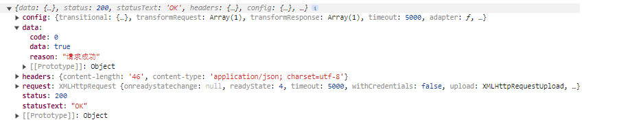
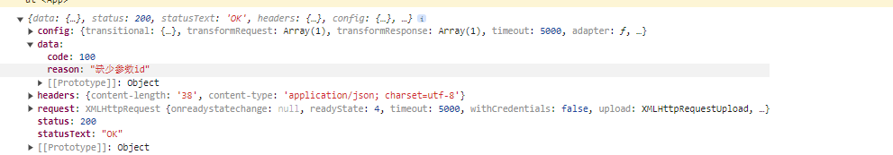
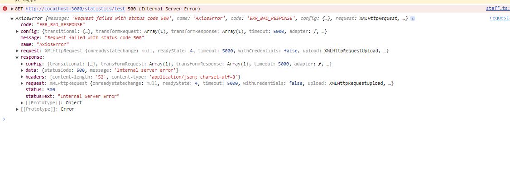
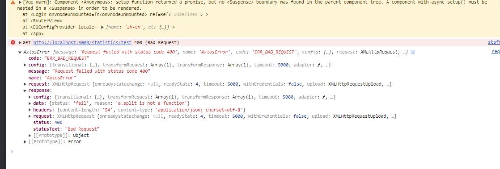

http 请求报错
一种情况是返回 200，但参数里附带着 code=0 或者 code=500 来表示请求有没有通过（成功访问或者没有成功访问），无论哪种都是这次 http 请求返回的状态码是 200，只是内容不同而已


还有一种是 catch 或者服务器的代码错误，或者直接 throw error 这时候如果不统一处理的话，会显示这次请求是错误的，状态码是 500 等信息

当然 nest 也给予了统一处理 catch 错误，这时候你可以修改错误代码，信息等内容
@Catch()
export class ProjectExceptionFilter implements ExceptionFilter<unknown> {
private readonly logger = new Logger("ProjectExceptionFilter");
catch(exception: unknown, host: ArgumentsHost) {
const ctx = host.switchToHttp();
const response = ctx.getResponse<Response>();
this.logger.debug("catch exception", exception);
if (exception instanceof Error) {
response.status(400).json({
status: "fail",
reason: exception.message,
});
} else {
response.status(400).json({
status: "fail",
reason: "unknown",
exception,
});
}
}
}

水印
Watermark 文件
MutationObserver